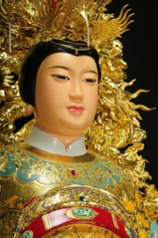
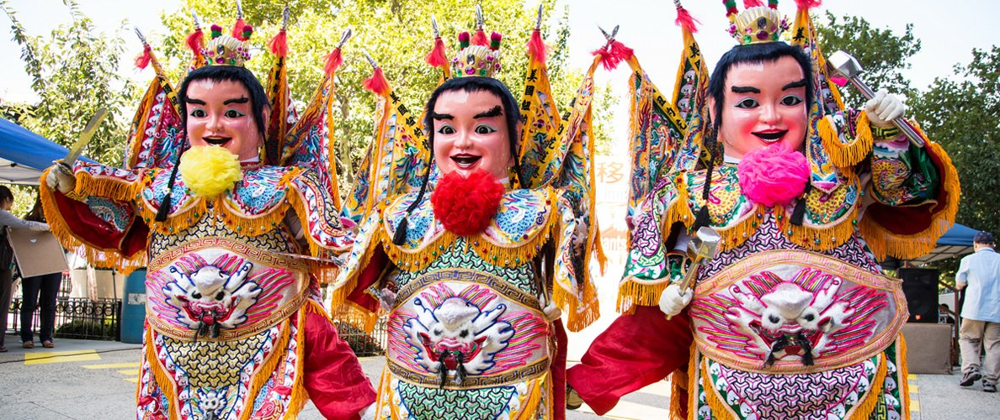

紐約花蓮慈惠堂New York Hua Lian Tsu Hui Temple
母娘慈悲Mu Niang Ci Bei · The Golden Mother's compassion
位於皇后區大學點的紐約花蓮慈惠堂成立於1991年，由何俊忠居士創辦，經老堂主何游阿粉女士十多年耕耘，再由現任的堂主何春燕接任後，才有今日的莊嚴道場。Located in College Point, Queens, New York Hua Lian Tsu Hui Temple was founded in 1991 by Mr. Ho Chun-Chung. After more than ten years of devoted work by the former head, Mrs. Ho Yu A-Fen, leadership passed to the current head, Ms. Ho Chun-Yen, under whom the temple has become the dignified place of worship it is today.
自從瑤池金母聖鸞降駕到花蓮縣吉安鄉之後，台灣瑤池金母的信仰就發展得相當快速，信仰瑤池金母的宮堂多以慈惠堂為名。The faith in the Golden Mother spread rapidly throughout Taiwan after her manifestation in Ji'an, Hualien, and many of her temples are named Tsu Hui Tang (慈惠堂).

主神簡介Principal Deity
無極瑤池大聖西王金母大天尊The Golden Mother of the Jasper Pool
瑤池金母，俗稱西王母、王母娘娘，信徒尊稱母娘。西王母為女仙之宗，以德配坤元，育養天地，統轄三界十方女神，乃女神至尊、女仙之首。The Golden Mother of the Jasper Pool, also called Xiwangmu or Wangmu Niangniang, is lovingly called Mu Niang by her devotees. She is the foremost of female immortals, nurturing heaven and earth and presiding over the goddesses of every realm.
本堂設施Facilities
地母娘娘・玉皇大帝Earth Mother · Jade Emperor出口Exit入口Entrance
一共三枝香，右側入口進、左側出口出。Three incense sticks in all. Enter on the right, exit on the left.
- 在祭改處左側取三枝香、點香Take three incense sticks to the left of the Jigai desk and light them
- 大殿參拜瑤池金母、玉皇大帝、地母娘娘、天上聖母In the Main Hall, pay respects to the Golden Mother, the Jade Emperor, the Earth Mother and Mazu
- 文昌帝君殿參拜Pay respects in the Hall of Wenchang
- 五路財神殿參拜，之後從出口出去Pay respects in the Hall of the Five Wealth Gods, then leave by the exit
- 外廊主爐插一枝香，再從左側樓梯下樓Place one stick in the main burner on the veranda, then go down the left stairs
- 前庭天公爐插一枝香，再從右側樓梯上樓，由入口回到室內Place one stick in the Heaven burner in the front yard, then go up the right stairs and come back in through the entrance
- 上二樓太歲殿參拜，不插香Go up to the Tai Sui Hall on the second floor (no incense)
- 上三樓三清殿參拜Go up to the Hall of the Three Pure Ones on the third floor
- 外廊香爐插一枝香Place one stick in the incense burner on the veranda
點燈祈福Lamp Lighting
每盞 $120。凡點太歲燈、光明燈、文昌燈、財神燈的信眾，本堂於每月農曆初一、十五誦經上疏。$120 per lamp. On the 1st and 15th of every lunar month the temple chants scriptures and presents prayers for all lamp holders.
線上點燈和法會報名Lamp & Ceremony Registration
點燈、法會可以線上報名，送出後帶繳費單到堂裡繳交現金。Register online, then bring your payment slip to the temple and pay in cash.
堂主簡介Head of the Temple
紐約花蓮慈惠堂堂主何春燕女士，出生於台灣宜蘭縣羅東鎮上，小康家庭，父親是畫家，母親是虔誠的媽祖信徒，自幼就身受父母親的教誨，立身處事講究篤信、堅實。Ms. Ho Chun-Yen was born in Luodong, Yilan County, Taiwan. Her father was a painter and her mother a devout follower of Mazu, and she was raised to value sincerity and steadiness.
聯繫本堂Contact Us
- 地址Address
- 參拜時間Hours
- 每日上午 9 點至下午 4 點Daily, 9:00 am – 4:00 pm
- 電話Tel
- 傳真Fax
